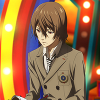
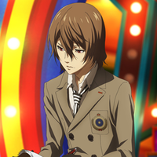

Главный герой aka Joker aka Амамия Рен
Рост: 175
Возраст: 16-17
День рождения: 1999 - ранний 2000
Знак зодиака: -
Сущность: Arsene
Аркана: Использует все арканы
Оружие: Кинжал и пистолет
Протагонист Persona 5 — студент, перешедший в академию Шуджин. В начале игры он не имеет каких-либо возможностей повлиять на мир и связан правилами системы. Однако, под маской слабака скрыт волевой подросток, известный миру как Фантом, обитателям Бархатной комнаты он известен как Трикстер, а среди своих сокомандников он носит прозвище Джокер. Герой является лидером бунтарской группы «Призрачные воры сердец», которая стремится изменить общество, меняя сердца людей, грабя их внутренние миры.
Рюджи Сакамото aka Skull
Рост: 175
Возраст: 16-17
День рождения: 3 июля 1999
Знак зодиака: Рак
Сущность: Капитан Кидд, Сейтен Тайсей, Уильям
Аркана: Колесница
Оружие: Дубинки и дробовик
Рюджи Сакомото - играбельный персонаж Persona 5, ученик школы Шуджин, бывший участник команды бегунов и самый проблемный ученик школы. Рюджи имеет короткие колючие светлые волосы и темно-карие глаза. По словам Каваками, натуральный цвет его волос черный. Его бровям не хватает внешних сторон. Имеет мускулистое телосложение.Сакамото известен как "проблемный ученик" в школе, чье плохое поведение доставляет учителям всевозможные неприятности. Он весьма гордится своим статусом самопровозглашенного "нарушителя спокойствия". Иногда он может быть вульгарным и агрессивным, как показано в его ранних отношениях с Юсуке и Макото. Он также довольно вспыльчив, легко обижается даже на малейшие комментарии. Тем не менее, он никогда не прибегнет к насилию, если его не провоцируют. Имя Рюдзи ссылается к Рёме Сакамото (坂 本 龍馬) периода бакумацу. Он пытался смягчить напряжение, происходившое между самураями после инцидента с Тораношиной Икедой, который убил двух высших самураев. Это была месть за то что один самурай из их чина убил его младшего брата за возможное столкновение плечом с ним. В итоге, лишившись чина Икеда совершил ритуальное самоубийство (харакири). И тогда ситуация более-менее наладилась. Позже, разочаровавшись в высших самураях, низшие самураи стали уходить из их командывания. В их числе был и Рема Сакамото со своим товарищем Синтаро Накакой.
Моргана aka Mona
Рост: 60
Возраст: около года
День рождения: -
Знак зодиака: -
Сущность: Зоро, Меркурий, Диего
Аркана: Маг
Оружие: Меч и рогатка
Кот, умеющий превращаться в некое антропоморфное существо-маскота. Направляет в развитии банду «Неуловимые похитители сердец», аргументируя это желанием стать человеком. Несмотря на женственное имя, является персонажем мужского пола и пытается своим поведением всем это доказать. Злится, когда его называют котом.
Анн Такамаки aka Panther
Рост: 168
Возраст: 16-17
День рождения: 12 ноября 1999
Знак зодиака: Скорпион
Сущность: Кармен, Геката
Аркана: Возлюбленные
Оружие: Кнут и пистолет-пулемет
У Анн ярко-голубые глаза и светлые пепельные волнистые волосы, которые заплетены в два боковых хвостика, а челка смещена к правой части лица. Она использует в качестве аксессуаров желтую заколку и маленькие белые серьги. Возможно, у нее разная этническая принадлежность: ее фамилия - японская, однако она упоминает, что жила в Финляндии, а ее профиль говорит, что она на четверть американка. Она выше Хару и Макото, хотя они старше Анн на год.Анн очень добрая, милая и сострадательная девушка, что замечают Моргана и Соджиро. Годы изоляции из-за ее внешности заставили ее быть замкнутой, она была убеждена, что потеряла свое место в мире, но это не мешает ей быть открытой с близкими друзьями и веселиться. Это из-за того, что она научилась не заботиться о том, что думают о ней другие люди, урок, который ей преподала Шихо Сузуи, ее единственная подруга до присоединения к Фантомным Ворам. Она была первой, кто смогла увидеть, кем является главный герой, не смотря на слухи. Она готова была простить Макото, узнав ее роль в инциденте с Камошидой, а именно, что она хотела что-то сделать, но был слишком беспомощной чтобы остановить его. До этого она также успокаивает Макото, когда она называет себя «отбросом Земли» из-за ее неспособности помочь жертвам Камошиды, заявив, что если она действительно была подонком, то она бы не созналась в этом. Хобби Анн - шоппинг и видео-игры, считая это хорошими антидепрессантами. Когда Футаба говорит, что все можно заказать в Интернете, Анн шокирована и говорит "Видеть и чувствовать - это самые важные части". Она также слаба к сладостям, таким как торты, и добавкам "экстра экстра крем".
Юскэ Китагава aka Fox
Рост: 170
Возраст: 16-17
День рождения: 20 января 2000
Знак зодиака: Водолей
Сущность: Гоэмон, Каму Сусано-о, Горокичи
Аркана: Император
Оружие: Катана и штурмовая винтовка
Успешный ученик старшей школы Косэй, талантливый художник. У Юскэ темно-синие волосы с челкой на левую сторону, которая слегка закрывает его серые глаза. Его игровая модель заметно более высокая и худая, чем у других мужских персонажей. Его напарники-призрачные воры Анн Такамаки и Рюдзи Сакамото оба описывают его, как "симпатичного мальчика." В отличие от своей сокурсницы Хифуми Того, Юскэ не носит школьную форму старшей школы Косей. Его зимняя униформа состоит из белой рубашки наподобие гакурана с вышитой на ней геральдической лилией, черных приталенных брюк и туфель. К пряжке его ремня прикреплено серебряное кольцо, удерживающее несколько ключей. В летнем варианте униформы белая рубашка сменяется ультрамариновой с закатанными до локтей рукавами. Ученик легендарного художника Мадарамэ, сирота с ранних лет. Очень любит искусство, что иногда вызывает непонимание окружающих из-за его странного характера. Беден из-за своей расточительности и часто говорит о еде, но при этом принципиален и отказывается рисовать ради денег. В бою предпочитает использовать катаны и штурмовые винтовки. Персоны Юсукэ — Гоэмон и Каму Сусаноо.
Макото Нидзима aka Queen
Рост: 164
Возраст: 17-18
День рождения: 23 апреля 1998
Знак зодиака: Овен
Сущность: Иоанна, Анат, Агнес
Аркана: Жрица
Оружие: Кастеты и револьер
Макото Нидзима - президент школьного совета школы Сюдзин. Обладает крайне острым чувством справедливости, ответственно подходит ко всем обязанностям. Во всём старается слушать старшую сестру, которая стала её опекуном после смерти отца. Отлично учится, талантливый стратег. В бою пользуется кастетами и револьвером. Персоны Макото — Иоанна и Анат. В бою Макото вооружена револьверами и шипованными перчатками. А её персона, живой мотоцикл Иоанна (по имени легендарной папессы), наносит ядерный урон и способна защитить и подлечить соратников.
Футаба Сакура aka Oracle
Рост: 152
Возраст: 15-16
День рождения: 19 февраля 2001
Знак зодиака: Водолей
Сущность: Некрономикон, Прометей, Al Azif
Аркана: Отшельник
Оружие: -
Футба Сакура - рыжеволосая девушка с талантом к взломам и вычислениям. Служит для главных героев навигатором в подземельях. Из-за трагических событий в прошлом очень замкнута, практически не умеет общаться с людьми. Страдает от социофобии и комплекса вины. Усыновлена Содзиро Сакура.
Хару Окумура aka Noir
Рост: 158
Возраст: 17-18
День рождения: 5 декабря 1998
Знак зодиака: Стрелец
Сущность: Миледи, Астарта, Люси
Аркана: Императрица
Оружие: Гранатомет и топор
Хару Окумура - игровой персонаж Persona 5. Она богатая ученица Академии Шуджин , а также член Фантомных Воров. Единственная дочь Куниказу Окумуры, пятой жертвы. Привлекательна, доброжелательна, но волей судьбы оказывается втянута в брак по расчёту. Живёт по воле отца, иногда действует по его желанию вопреки своим. Талантлива в садоводстве, поддерживает небольшой огород с овощами на крыше школы. В бою пользуется алебардами и гранатомётами.
 Каждый член банды берет на себя кодовое имя: протагонист - Джокер, Рюдзи - Череп, Моргана - Мона, Энн - Пантера.
По мере совершения всё новых похищений, группа, разрастающаяся постепенно до Джокера, Рюдзи, Энн, Морганы, художника Юсукэ, президента школьного совета Макото, хакерши Футабы и наследницы ресторанной сети Хару, привлекает внимание властей и правоохранительных органов, а их популярность в качестве народных мстителей начинает расти. Саэ, ведущая расследование, начинает охоту за Похитителями Сердец, а сама группа раскрывает теневой заговор, который выводит их на случаи «ментального отключения», которые происходят, если хозяина Дворца в подсознательной реальности не ограбить, а убить. Череду успешных ограблений прерывает несчастный случай, при котором «отключается» один из хозяев Дворцов, президент ресторанного бизнеса Окумура, после чего тот умирает в реальном мире. Группа понимает, что их подставил тот, кто стоит за ментальными отключениями, а детектив Горо Акэти раскрывает личности Похитителей Сердец, но пользуется моментом и присоединяется к группе при том условии, что следующее их дело будет последним.
Последнее ограбление приводит игру к начальной сцене, где герои нападают на казино, а протагонист оказывается на допросе.
Каждый член банды берет на себя кодовое имя: протагонист - Джокер, Рюдзи - Череп, Моргана - Мона, Энн - Пантера.
По мере совершения всё новых похищений, группа, разрастающаяся постепенно до Джокера, Рюдзи, Энн, Морганы, художника Юсукэ, президента школьного совета Макото, хакерши Футабы и наследницы ресторанной сети Хару, привлекает внимание властей и правоохранительных органов, а их популярность в качестве народных мстителей начинает расти. Саэ, ведущая расследование, начинает охоту за Похитителями Сердец, а сама группа раскрывает теневой заговор, который выводит их на случаи «ментального отключения», которые происходят, если хозяина Дворца в подсознательной реальности не ограбить, а убить. Череду успешных ограблений прерывает несчастный случай, при котором «отключается» один из хозяев Дворцов, президент ресторанного бизнеса Окумура, после чего тот умирает в реальном мире. Группа понимает, что их подставил тот, кто стоит за ментальными отключениями, а детектив Горо Акэти раскрывает личности Похитителей Сердец, но пользуется моментом и присоединяется к группе при том условии, что следующее их дело будет последним.
Последнее ограбление приводит игру к начальной сцене, где герои нападают на казино, а протагонист оказывается на допросе.